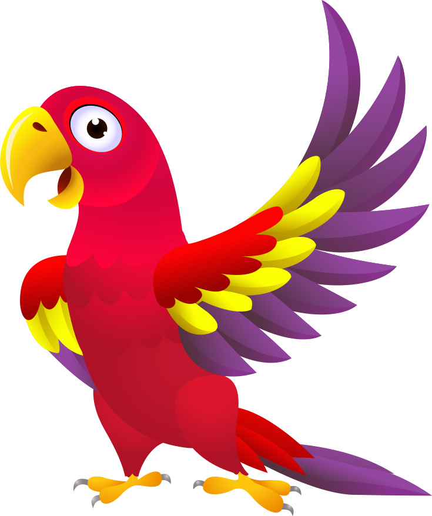

<mat-toolbar color="primary">
    <mat-toolbar-row>
        <button mat-button type="button" class="btn btn-primary-outline pull-left" (click)="btnClick('');"><i class="fa fa-plus"></i>Home</button>    
        <button mat-button type="button" class="btn btn-primary-outline" (click)="btnClick('flags');"><i class="fa fa-plus"></i>Flags</button>    
        <button mat-button type="button" class="btn btn-primary-outline " (click)="btnClick('countries');"><i class="fa fa-plus"></i>Maps</button>    
        <button mat-button type="button" class="btn btn-primary-outline " (click)="btnClick('geolocator');"><i class="fa fa-plus"></i>Geolocator</button>    
        <button mat-button type="button" class="btn btn-primary-outline " (click)="btnClick('ornithology');"><i class="fa fa-plus"></i>Ornithology</button>    
    </mat-toolbar-row>

</mat-toolbar>